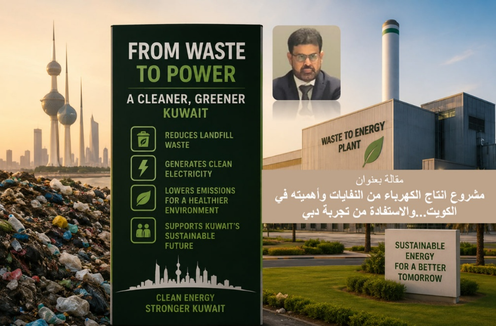
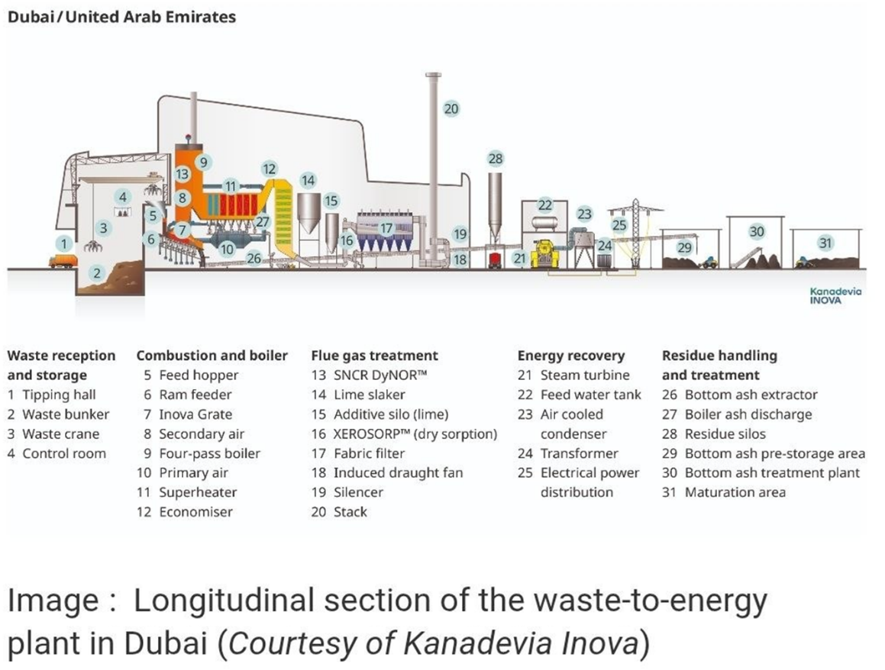

أهمية المشروع
من المشاريع الحيوية والشيقة والتي تستحق كل الاهتمام والتوطين هو مشروع إنتاج الطاقة من النفايات، خاصة ما تم تنفيذه في مشروع وارسَن دبي، والذي تم تشغيله في عام 2024 لإنتاج الكهرباء بقدرة تصل إلى 200 MWp وتزيد خاصية التشغيل الفعلي بنسبة تفوق 80% Capacity Factor، بحيث تصل طاقتها السنوية لأكثر من 1370 GWh، وبتكلفة قاربت المليار دولار.
تم تنفيذ المشروع بنظام عقد يسمى BOOT: Build Own Operate Transfer، وعادة يتم تشغيل هذه المشاريع لمدة تصل إلى 35 سنة، وتكون تكلفة الكهرباء المنافسة فيها ما بين 8 و25 سنت لكل كيلووات ساعة.

الأهداف الاستراتيجية
- توفير طاقة كهربائية موثوقة أكثر وأفضل من الاعتماد على الطاقة الشمسية وطاقة الرياح وحدهما.
- التخلص من النفايات وتقليل تراكمها في المرادم، حيث يحتاج هذا المشروع إلى ما يقارب 5500 طن يومياً، أي ما يقارب 1.9 مليون طن سنوياً، ومن المتوقع أن تقلل هذه المحطة النفايات في مردم دبي بنسبة 45%.
- تحسين البصمة الكربونية للدولة، خاصة أن انبعاثات النفايات في المرادم مليئة بالميثان، وهو أشد ضرراً من الكربون من حيث القيمة التكافؤية.
- الاستفادة من المياه الناتجة من معالجة النفايات الصحية لتشغيل دورة البخار بدلاً من الاعتماد على مياه البحر، وهو استخدام مثالي لمياه لها استخدامات محدودة في وطننا العربي.
- استخدام أحدث التقنيات في امتصاص الكربون وتخزينه CCS، وأنظمة فلترة تمتص الرماد المتطاير والرماد المتجمع في القاع، مع إدخالها في عمليات فصل المعادن وإعادة التدوير.
التحديات وسلسلة الإمداد
هذا النوع من المشاريع قد يكون جديداً في منطقتنا العربية، ولكنه فعال في دول كثيرة أهمها بلجيكا وألمانيا. ويتطلب إدارة دقيقة لسلسلة الإمدادات، خاصة في عملية وصول كمية النفايات اليومية للمحطة. في هذا المشروع يتطلب الأمر 88 شاحنة حاملة للنفايات كل ساعة، بمعدل 1000 عملية تفريغ يومياً في المحطة.
من التحديات المتوقعة في الدول الخليجية حرارة الجو صيفاً ونشاط الغبار، مما يصعب عمل التوربينات البخارية وعملية التسخين الداخلي، حيث تحتاج لتدفق مستمر لهواء نظيف ومعتدل الحرارة. كما تحتاج هذه المشاريع إلى تطوير البنية التحتية، خاصة مشاريع المعالجة الصحية وربطها بمحطات إنتاج الطاقة.
فرصة الكويت
نحن في الكويت ننتج سنوياً ما بين 3 و4 مليون طن من النفايات، ومعظمها يتراكم في المرادم التي أصبحت جبالاً تحيط بالمناطق السكنية، مليئة بالغازات والملوثات الخطرة على البيئة والإنسان. وبالتالي فإن مشروعين بنفس هذا الحجم يمكن أن يسهما في حماية البلد من الملوثات، وفي الوقت نفسه إنتاج طاقة كهربائية موثوقة.
التعليقات
شارك تعليقك مع منصة جرين سايكل. يتم نشر التعليقات بعد موافقة الفريق.